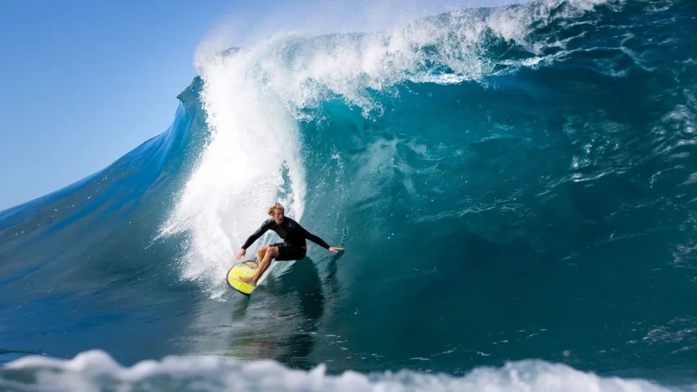

冲浪赛事一般分短板、长板男、女单项及男、女团体赛赛事时长根据海浪条件由赛会进行调整，取最佳条件进行比赛，整个赛事时长一般从1天至10天不等。（因此比赛不是每天都能看，需要注意赛事实时转播状态更新）
单项赛事规则
单项赛事以个人轮次晋级形势进行。一般以每3、4人一组取本组成绩最好的前两名选手晋级下一轮。

ISA世界冲浪协会赛事规则(International Surfing Association（国际冲浪运动协会）)
ISA世界冲浪协会赛事规则设有复活轮次，第一轮组的3、4名选手可以进入复活轮继续争取前两名晋级，直到决赛组合并。
WSL世界冲浪联盟赛事规则(World Surf League（全球冲浪联盟）)
WSL世界冲浪联盟赛事规则只设有一轮复活赛，复活轮前两名进入正赛轮继续比赛。冲浪比赛中，每道浪的满分为10分。取运动员每组比赛的最好两道浪成绩为最终成绩。0.1-1.9分为差，2-3.9分为及格，4-5.9分为平均，6-7.9分为好，8-10分为优秀。当然评分会根据浪况有所浮动和调整。
裁判组组成
裁判组一般由3-5个执法裁判，1个主裁判，1个轮换裁判及1名优先权裁判组成。每组比赛时长从15分钟至35分钟不等，根据比赛场地的海浪频率相应调整。
犯规判罚
抢浪犯规（大部分情况下，在一方拥有优先权或在无优先权情况下先起乘并朝一个方向滑行的路程中另一方起乘阻挡，那么另一方属抢浪犯规）
蛇形滑水犯规（当另一方运动员滑水从外面绕过一方运动员并试图抓浪，这样的情形将有可能被判蛇形滑水犯规）
滑水阻挡犯规（在另一方运动员滑水返回浪点的途中，阻挡了正在冲浪运动员的通道路径，影响其得分机会，将被判滑水犯规）
起乘滑水犯规（当另一方运动员试图滑水抓浪，造成浪的路径产生扣下白浪花，影响拥有优先权运动员的得分机会的，将被判滑水犯规）

优先权
优先权这一规则在国际重大比赛中都已普遍使用，它旨在保障每个运动员都得到至少一次优先选择海浪的权利。
执法中它要求裁判组特别设立优先权裁判专门执法监督优先权的变化。由于优先权在比赛中的变化快，不规则，给裁判执法和运动员的灵活运用提出了更高的要求。同时运动员熟练运用优先权将最大限度提升比赛获胜的几率，当然反之亦然。